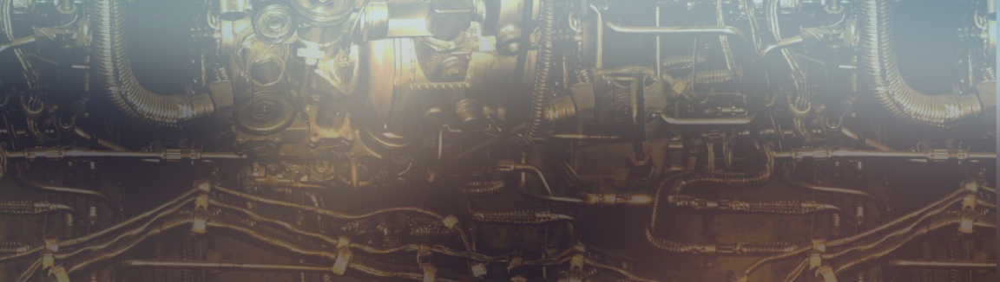

BioThermodynamics
Overview
1. Intro.2. Enthalpy, Entropy and Gibbs Free energy.
3. Gibbs Free Energy in Biochemistry.
4. Reversible and irreversible reactions.
5. Equilibrium vs Steady State.
1. Intro.
Have you wonder why nails rust, but do not unrust. Why people age and do not unage? Why water freeze at low temperatures and melt at high temperatures?
Thermodynamics was invented to increase efficiency of steam engines, however it turned out it can also answer questions stated above.
A cell contains thousands of molecules that have even more functional groups like ketones or carboxilic acids in theory all of these can react with each, however only some reactions are possible! Biothermodynamics is used to describe what reactions within cell are possible and what are not possible.
2. Enthalpy, Entropy and Gibbs Free energy.
Enthalpy, entropy, and Gibbs free energy are the most important concepts in thermodynamics.
Enthalpy is a measure of the energy absorbed or released by the system. For example when ice melts, on a molecular level water molecules break hydrogen bonds between each other. The breaking of hydrogen bonds requires energy input. Therefore the energy is absorbed and the reaction is said to be endothermic and the and the sign for enthalpy is positive (+ΔH)
Entropy is a measure of disorder. For example when ice melts the entropy increases because liquid water molecules form fewer hydrogen bonds with each other, as a result water molecules can undergo more different types of motion such as vibration, rotation and translation (move past one another) and therefore increase the amount of disorder and therefore the sign for entropy is positive (+ΔS).
Gibbs free energy is a measure of spontaneity. A spontaneous process is a process that occurs without the addition of external energy. It is calculated from enthalpy and entropy. In simple terms it tells us weather the reaction is will occur or not. The process is spontaneous if Gibbs free energy is negative (-ΔG) and the reaction is said to exergonic.
Change in Gibbs free energy is used to determine weather the reaction is spontaneous.
We can mathematically consider all possible censorious by going trough the table below:
3. Gibbs Free Energy in Biochemistry
The above equation for ΔG works well in physical chemistry, however in biochemistry we use different equation, because ofthen times we cannot calculate entropy and enthalpy of chemical reactions within the cell.
Q = mass action ratio. In a sense it a measure of how far away the reaction is from equilibrium.
ΔG0' = Gibbs free energy at standard condition (1atm, 273.15K, 1M Products and Reactants) and pH 7. In a sense this could be thought of as a barrier that needs to be overcome in order for over all equation to be negative.
How to calculate it?
Problem 1
Calculate the actual free energy of hydrolysis of ATP in human erythrocytes. The standard free energy of hydrolysis of ATP is -30.5 kJ/mol, and the concentrations of ATP, ADP, and Pi in an erythrocyte (all in M) are as follows: [ATP] = 2.25 X 10 –3; [ADP] = 0.25 X 10-3; and [Pi] = 1.65 X 10–3. Assume that the temperature is 37 oC and the pH is 7.0.
T = 37C = 310 KR = 8.314 J/ K*mol
ΔG = ΔGnot + RTln(Q)
Htdrolysis = ATP ---> ADP + Pi
Q = Products/Reactants = ADP * Pi / ATP = (0.25e-3 * 1.65e-3) / 2.25e-3 = 0.000183 M
ln(Q) = - 8.6 (unitless)
ΔG = -30500 J/mol + 8.314 J/ K*mol * 310 K * - 8.6 = - 30500 - 22187 = -52687 J/mol
Problem 2
Consider the following reaction in which the sugar fructose reacts with ATP to form fructose – 6 –phosphate:
ATP + Fructose ---> ADP + Fructose-6-phosphate.
In this reaction, one of the phosphate groups from ATP becomes attached (covalently) to the sugar fructose. If
ATP ---> ADP + Pi (ΔGo’ = -30.5 kJ/mol)
Fructose + Pi ---> Fructose-6-phosphate (ΔGo’ = +15.9 kJ/mol)
What is the equilibrium constant for the reaction in bold? Assume T = 300 K.
2. ΔG = ΔGnot + RTln(Q)
At equilibrium ΔG = 0 and Q=K
3. 0 = 14.6 - 300*8.314 ln(K)
5.85 = ln(K)
K = 347.2
4. Reversible and irreversible reactions.
Here is an intuitive example:
When there is a mosquito on your skin you can kill it which is an irreversible process, because you cannot unkill a mosquito. Alternatively, you can shoo it away which is a reversible process because mosquito can return to exact same position.
Just like mosquito, chemical reactions can be either reversible or irreversible. For now, the most concept is it to realize that irreversible reactions have an error that point only in one direction while the reversible reactions have arrows in both directions.
For irreversible reaction ΔG is very large and negative. Which also means that, irreversible reactions are spontaneous.
For reversible reaction ΔG is aprox. equal to 0.
Also not that if ΔG is very large and positive, it simple means that reaction is not spontaneous. Meaning it will not occur unless we couple it with a different reaction that has even greater negative ΔG.
5. Equilibrium vs Steady State.
Steady state can do work, like in the example below, the steady flow of water turns the water wheel:
5. Vant Hoff Plot
There is a fundamental – and practical – relationship between the two ways of expressing the free energy – using thermodynamic terms and using concentrations. The equilibrium constant is expressed in terms of concentrations. However, sometimes we are interested in knowing the thermodynamic parameters of a chemical process or reaction. We can use the van’t Hoff equation to do so.
If we set the two forms of the free energy expression equal to one another and rearrange the terms, we get the van’t Hoff equation.
6. Bio Electro Thermodynamics
Many biological reactions involve oxidation – reduction reactions. The two central questions of metabolism are: which oxidation – reduction reactions are possible and what is the free energy available from the reactions?
We can also relate electro chemistry and gibs free energy trough eqation below:
How to calculate it?
Calculate standard free energy of acetaldehyde reduction by NADH.